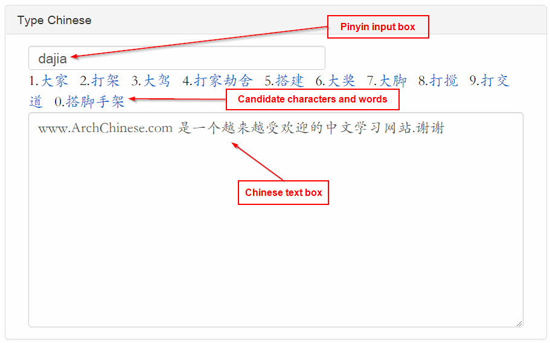

You can type Chinese on a tablet, smartphone, or PC without installing a Chinese Input Method Editor(IME)! It is fast and runs on all the modern web browsers. No additional software or browser plug-ins need to be installed.

As shown in
the screenshot
of this online Chinese input system, it consists of 3 boxes: the Pinyin input box, the Chinese text box, and the candidate character and word box. To type Chinese:
-
Enter fuzzy Pinyin (Pinyin without tones) into the Pinyin input box. For examples, hao
and nihao
. Use v for ü , e.g. lv
-
When typing words with two or more characters, you can just type the first letter of each syllable. For example, ggqc
for 公共汽车
, daxs
for 大学生
, and gxing
for 高兴
- Press the corresponding number key, or click the Chinese character or word, to select the character or word from the candidate box
-
Press the Enter
to select the first character or word in the candidate box
-
Press Right Arrow
or Down Arrow
key to show the next page of candidates
-
Press Left Arrow
or Up Arrow
key to show the previous page of candidates
- Letters (a to z) and numbers (0 to 9) are used to enter Pinyin and select the candidate character or word.
All other ASCII characters are automatically inserted into the Chinese text box
-
Press Ctrl
to toggle the input cursor to the Chinese text box so you can enter numbers and letters into the Chinese text or
edit the Chinese text. For example, selectively deleting some Chinese text, adding white spaces or line breaks
-
Press the Alt + Shift
keys to show and select a Chinese punctuation mark
- On tablets or smartphones, tap the Pinyin input box or Chinese text box to switch back and forth .
- If you press backspace key and there are no more Pinyin letters in the Pinyin input box to delete,
the last character in the Chinese text box will be deleted instead
The candidate character and word entries are from the Arch Chinese
Chinese-English dictionary